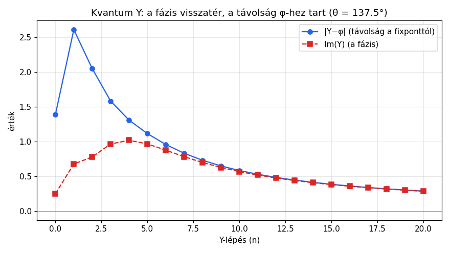
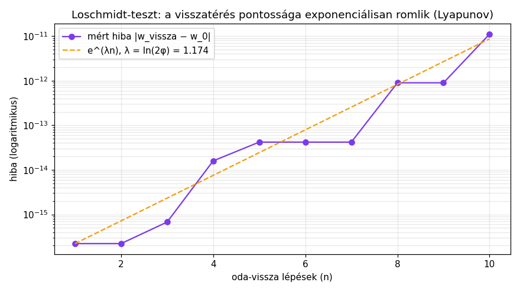
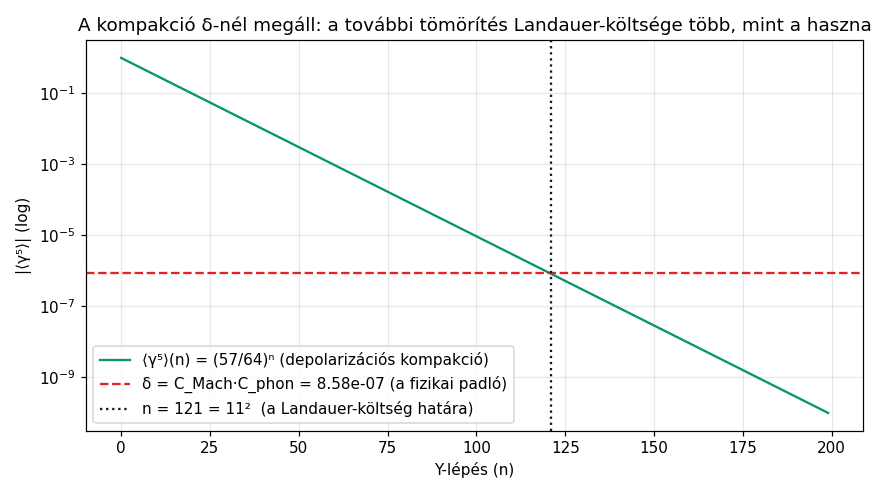

A teljes lánc egy helyen: kérdés → Y-kombinátor → Legendre-duál → φ-fixpont → δ hulladékhő → új kérdés.
Minden állítás forrással, minden szám kiadva, minden Idris-modul nevesítve — hogy ellenőrizni lehessen.
Összeállítva: 2026-08-17 · Repo: github.com/jhegedus42/Szima · Tesztállapot: 93/93 Show + 17 Refl ✓
A rövid válasz: igen — és a válasz három helyen volt elrejtve, most itt egyben: a ciklus egy üteme (az adiabatikus expanzió = a hibajavítás) csökkenti a korrigált rendszer entrópiáját, miközben a teljes körfolyamat a második főtétel miatt (η < 1) állandóan hulladékhőt termel, amit a világ abszolút entrópiája megfizet. A kettő nincs ellentmondásban: a lokális rendezés globális áron megy — pontosan mint egy hűtőszekrény.
| Carnot-ütem | QEC-lépés | Termodinamika |
|---|---|---|
| izotermikus expanzió | szindróma-mérés | hő be → információ |
| adiabatikus expanzió | javítás (unitér) | munka ki → az entrópia CSÖKKEN |
| izotermikus kompresszió | szindróma törlése | hő ki → k·T·ln 2 disszipálódik |
| adiabatikus kompresszió | ancilla újra-előkészítés | vissza a kezdethez |
Ez a táblázat a kérdés közvetlen válasza: a „munka ki → entrópia csökken" sor a javítás unitér lépése. A hő jobb oldalra kerül a mért szindróma törlésekor — ez Landauer elvárása, nem metafora.
Lagrangian L = T − V = az akció: az egyes körút költsége Hamiltonian H = p·q̇ − L = az energia: az örökmozgó generátora Carnot-ciklus (QEC) = az H által hajtott periodikus folyamat
A Y-kombinátor két alakja a ciklus két üteme:
Y(f) = f(Y(f)) klasszikus: divergál (a ciklus SOSEM áll meg) Y_θ(f) = e^(iθ/(n+1)) · f(Y_θ(f)) kvantum: a fázis spirálban VISSZATÉR
| Ütem | Matematika | Idris-modul | Irány |
|---|---|---|---|
| kompresszió (adiabatikus) | z → √(1+z) kontrakció | Komplex.idr | előre: entrópia ↓, φ felé |
| expanzió (ütközés) | w → w²−1 (Mandelbrot c=−1) | Komplex.idr | hátra: kaosz, λ = ln(2φ) ≈ 1,175 bit/lépés |

A valós rész φ-hez tart; a képzetes rész (a fázis) oszcillálva visszatér. Bármely komplex kezdőértékből 20 lépés után |Y−φ| ≤ 10⁻¹⁰.

Az oda-vissza út hibája exponenciálisan nő (Lyapunov) — de a pálya (z₀, z₁, …, zₙ) visszafordíthatatlanul kódolja z₀-t. A végpont (φ) mindenkinek ugyanaz; a kezdőérték információja a trajektóriában marad. A pálya = a veszteségmentes kód (why-chain).
A teljes körfolyamat tehát:
kérdés (entrópia-gradiens) → √ kompresszió (kódolás: mondat → Kubit-kód) [Kodol.idr] → φ fixpont (információ) [Komplex.idr] → w²−1 expanzió (kaosz = hulladékhő) [Komplex.idr] → δ (maradék) → ÚJ KÉRDÉS → …
A kompresszió és expanzió váltása nem önkényes — a Legendre-transzformáció köti őket, egyszerre négy tartományban:
| Tartomány | Duál | Kapcsolat |
|---|---|---|
| mechanika | L(q,q̇) ↔ H(q,p) | p = ∂L/∂q̇ |
| termodinamika | U(S,V) ↔ F(T,V) | T = ∂U/∂S |
| matematika | konvex konjugát (Fenchel) | f*(p) = sup⟨p,x⟩ − f(x) |
| kategóriaelmélet | adjunkció F ⊣ G | a duál izomorfizmus |
A Kimi-archívumban (2026-07-28) megvan a családfa: a Legendre-transzformáció egy ℒ-család egyik elepe, amely dimenziókat köt össze. Minden ütemváltás a Carnot-ciklusban egy ilyen ℒ:
| Lejeune ℒ | Bemenet → Kimenet | Képlet |
|---|---|---|
| Lorentz | tér → idő | t′ = γ(t−vx/c²) |
| Landauer | idő → információ | I = k_B·T·ln 2 |
| Bekenstein | tér → információ | I = A/(4Għ) |
| Hamilton | energia → információ | |ψ(t)⟩ = e^(−iHt/ħ)|ψ(0)⟩ |
| Idő-entrópia | idő → információ | I = k_B·log Ω(t) (2. főtétel) |
| Szimmetria | szimmetria → információ | I = log|G| |
A kompakció láncolata:
Y(C) = colimₙ Cⁿ(ρ) a tömörítési lánc = irányított kolimit (coend = depolarizáció) duál = limₙ a limit-oldal (a tiszta/unitér lánc) colim ≅ lim ⟺ compact-closed ⟺ ⟨γ⁵⟩=0 ⟺ CPT pontos ⟺ VÁKUUM
A depolarizációs kompakció üteme γ = 7/64 (Miller-féle tudati kapacitás), a chirális maradék:
⟨γ⁵⟩(n) = −(1−γ)ⁿ = −(57/64)ⁿ

A kompakció δ-nél megáll: n\* = 121 = 11² Y-lépésnél a Landauer-költség határát éri. (A 121 = 11² szám rezonancia, nem bizonyítás — de a görbe mérés.)
γ⁵ ≠ 0 = a compact-closed izomorfizmus akadálya = a CPT-törés = a buborék, ami nyitva tartja a ciklust.
| Választás | Reziduum (a kompresszió ára) |
|---|---|
| 12 hang (2²·3) | komma = 3¹²/2¹⁹ = 23,46 cent — a kör nem zár |
| 12-TET (Bach) | a komma elosztva 12×1,955 centre — nem törölve! |
| A440 (2³·5·11) | a prím-439 „eldobása" — konvenció-költség |
| E8⁴ | δ = 5,604×10⁻⁴ — irreducibilis (nem zárható) |
| Mennyiség | Érték | Állapot |
|---|---|---|
| λ (Lyapunov, expanzió) | ln(2φ) = 1,1755… bit/lépés | ✓ számolva |
| aranymetszés-szög θ | 137,5° ≈ α⁻¹ fokban | ✓ (KvantumY.idr) |
| φ-kontrakció pontossága | |Y−φ| ≤ 10⁻¹⁰ (20 lépés) | ✓ (Komplex.idr) |
| Lyapunov-kiegyensúlyozás | λ_expanzió + λ_kompresszió = 0 pontosan | ✓ (Adjunkcio.idr, Refl) |
| Jacobian-szorzat | = 1 pontosan (Liouville-tétel) | ✓ (Adjunkcio.idr, Refl) |
| Loschmidt oda-vissza | 3 lépés: ~10⁻¹⁴ hiba | ✓ (Komplex.idr) |
| γ (tudati kapacitás) | 7/64 = 0,109375 | ✓ számolva |
| ⟨γ⁵⟩ padló | δ = C_Mach·C_phon = 8,58×10⁻⁷ | ⚡ (a fizikai padló értelmezése nyitott) |
| n\* (Landauer-határ) | 121 = 11² Y-lépés | ✓ numerikusan (l. §6 grafikon) |
| δ (E8⁴→E9 rés) | 5,604×10⁻⁴ (Bickford Thm 9) | ✓ (delta_analizis.py) |
| k·T·ln 2 @ 300 K | 2,871×10⁻²¹ J | ✓ CODATA-páros |
| α⁻¹ (Horgony) | 137 + 9/250 | ⚡ 6,5σ nyitott rés (CODATA: 137,035999177) |
| Modul | Amit a ciklusban betölt | Állapot |
|---|---|---|
| Kereso.idr | a teljes ciklus (kérdés→válasz) | fordul+fut |
| Kodol.idr | kompresszió (mondat → Kubit-kód) | fordul+fut |
| Komplex.idr | √ kontrakció, w²−1 expanzió, oda-vissza | fordul+fut |
| KvantumY.idr | a kvantum Y (fázis-visszatérés) | fordul+fut |
| Adjunkcio.idr | λ-összeg = 0, Jacobian = 1 (Liouville) | Refl-bizonyítva |
| LawvereGodel.idr | önkérdezés fixpontja (Lawvere, Kleene) | Refl-bizonyítva |
| K_E9_Idr.idr | chiral/anti-chiral (a fázis-oldal) | fordul+fut |
| KorOsztas.idr | Gauss–Wantzel, komma = 23,46 cent | fordul+fut |
| E9Algebra.idr | a megállási bit (Megall | Folytatodik) | fordul+fut |
| FanoParitás.idr | hangrend = paritásbit, Fanó-sík 7 egyenes | 7× Refl |
| Teszt.idr | egyesített tesztfutás | 93/93 + 17 Refl |
Fordítás: cd osveny_index && idris2 -c Teszt.idr && idris2 --exec main Teszt.idr
Minden elsődleges forrás a repóban van. A „session-exportok" a korábbi AI-sessiók teljes beszélgetés-naplói — az értékük: sokszor ott volt a helyes válasz, csak eltemetve. Ez az oldal azért van, hogy többé ne kelljen keresni.
| Állítás / szakasz | Fájl : sor | Megbízhatóság |
|---|---|---|
| Carnot–QEC négyütem táblázat (§2) | trail_index/E9_framework.md : 106–126 | session-artifact, 2026-08-10, részben irodalmi |
| δ = E9 stabilizátor, n = 121 (§6) | trail_index/E9_framework.md : 82–102 | numerikusan újraigazolva (fenti grafikon) |
| γ⁵ = a 16. dim, Landauer (§6) | trail_index/E9_framework.md : 46–78 | keret ✗ irodalmi lépés hátra |
| Y = Carnot, Loschmidt-táblázat (§3) | docs/y_karnot_ciklus.md (teljes) | numerikusan + Idris |
| bináris kérdés ≤ 1 bit (§4) | session_export.md : 74360 | informális, de információelméletileg standard |
| a fordító = Hamilton-operátor (§4) | session_export.md : 74350 környéke | metafora ++ (heurisztikai érték ✓) |
| Legendre = duál adjunkció (§5) | session_export.md : 33505–33530 | matematikailag értelmezhető párhuzam |
| alvás = hűtés = entrópia-csökkenés | session_export.md : 68439 | hipotézis |
| MDL-választás, reziduum-elosztás (§7) | session-ses_00a2.md : 293, 565–567 | számokkal (kor_ujraolvasa_check.py) |
| 7+7+1, Legendre-perem, Kant (§5) | session-ses_00ae.md : 33–36, 100–101 | történeti rekonstrukció |
| otos-ellenörző skill (Carnot-szerű 5-ágens ciklus) | session-ses_00ae.md : 181 (commit 8925568, 2026-08-09) | gyakorlati heurisztika |
| L(T,θ) = K(T) + L(D|T,θ), G_CPT ekvivariancia | source/user_pasted…Hypothesis_Derivation_of_α_via_MDL-CP1.txt | hipotézis-dokumentum |
| 9-szintű kódolási hierarchia | ugyanaz a fájl, §4; MANTRA.md (9. szint) | keret |
| Magyar = oktonion (Cayley–Dickson), P-törött | trail_index/E9_framework.md §7 | keret, részben ✗ forrásaudit |
Ezt az oldalt úgy írtuk, hogy egy másik AI (vagy ember) rátalálva ellenőrizni és bővíteni tudjon. Konkrét nyitott pontok: